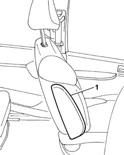
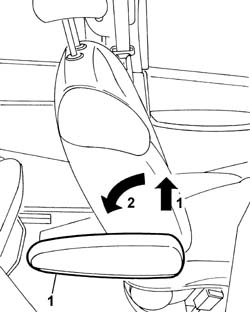

7045B18 FRONT SEAT ARM REST
- Path
- Procedures > 70 FITTINGS > 7045 FRONT SEATS > 7045B FRONT SEAT HEAD RESTRAINT/ARM REST > 7045B18 FRONT SEAT ARM REST
- Kind
- repair procedure (removal / refitting; the operation number is the code)
- Applies to
- all engines; all production periods
- Interactive page
- https://sloeber94.github.io/elrnDB-fUlss/en/#/179007859
Applies to: all engines; all production periods
 Removing
Removing
 Refitting
Refitting1. Place the armrest in the vertical position.

Applies to: all engines; all production periods
1. Exert pressure on the rotation pin and rotate the armrest towards the rear section of the seat until it is in the end of travel position and remove it.

Applies to: all engines; all production periods
Refitting
Removing- Fit the armrest.
- Exert pressure on the rotation pin and rotate the armrest towards the front section of the seat until it is in the end of travel position.
- Check the operation of the armrest.